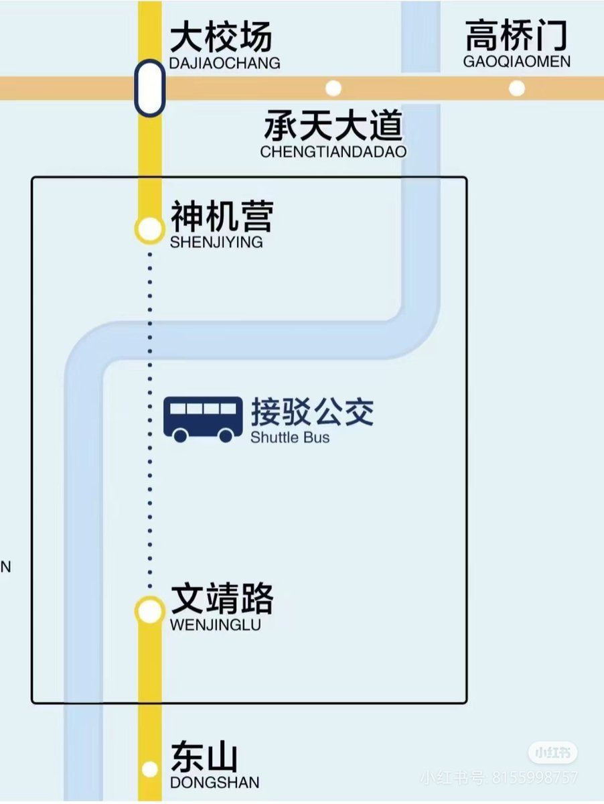

最他妈烦的一点就是军方权利过大了，阻碍城市发展，问就是保密和安全考虑，这都2025年了还保鸡巴的密啊，谁还派间谍空降过来刺探情报？都大数据时代了。还真有民众支持军方，说军方占据市区是为了保护民众，我只能说修在医院学校等公共设施旁边说白了就是拿你们当盾🤣现代战争，谁还打本土陆战？


南京地铁这个太幽默了，5号线有一段（地下）经过东部战区的土山机场，当初规划报批跟军方约定好军用机场会同步搬走。后来建成并通车试运行了一段时间，军区大爷又突然翻脸说搬迁暂缓，并且不允许地铁下穿运行。
一个直升机机场扯保密大旗，市府就是一点办法没有，现在临近全线开通，被迫用公交接驳方案 https://t.co/eGgihXTaYd
一个直升机机场扯保密大旗，市府就是一点办法没有，现在临近全线开通，被迫用公交接驳方案 https://t.co/eGgihXTaYd